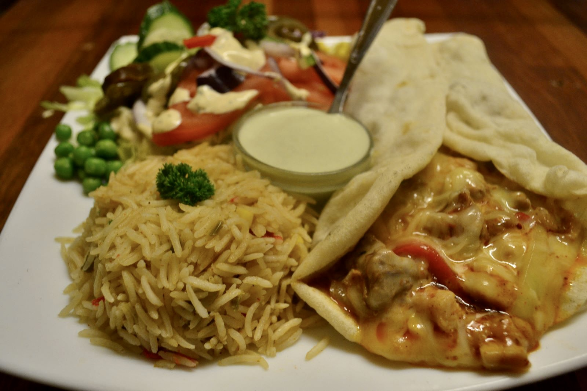
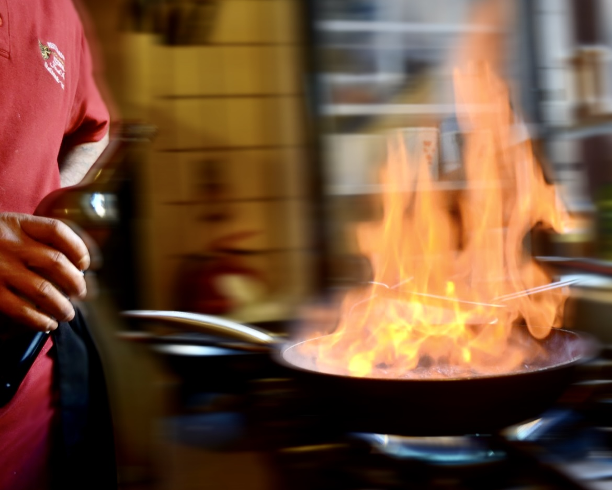
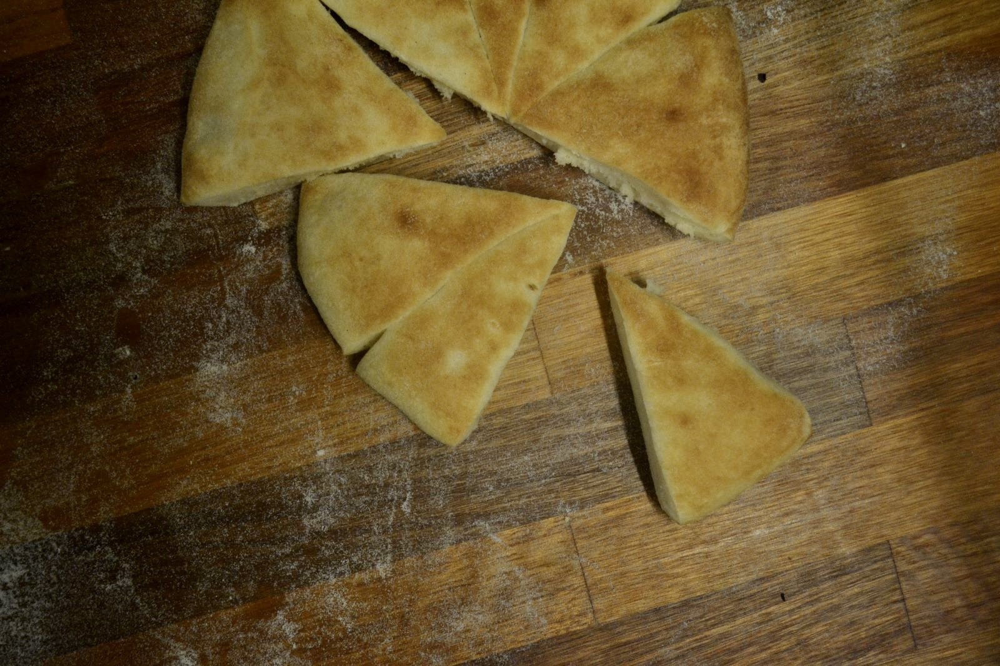

Mexicansk
Enchiladas de Pollo
Kylling, cremet ost, ris og frisk salat.
KimAnto er en familiedrevet restaurant i hjertet af Esbjerg, hvor det rustikke italienske køkken møder mexicansk ild. Hver ret er håndlavet med samme omhu som den dag vi åbnede.

"Byens bedste pizza — og de mexicanske retter er en oplevelse."
— Louise, Google-anmeldelse
Fra stenovnen til pandeflammen — smagene bygges over åben varme, som italienerne og mexicanerne har gjort det i generationer.
Friske grøntsager, håndrevet ost og hjemmerørte saucer. Ingen genveje, ingen halve løsninger.
Kvaliteten du huskede fra første besøg. Vi ændrer ikke det der virker — vi finpudser det.

Vi åbnede dørene på Kongensgade 111 i 2006 med en enkel idé: at servere den samme ærlige mad hver dag — den slags man kommer tilbage til.
I dag laver vi stadig hver pizza på bestilling, ruller vores egen pasta og krydrer vores fajitas efter opskrifter vi har finpudset i næsten to årtier.
Rimelige priser. Rigelige portioner. Samme smag som første gang.
Vi vælger friske råvarer hver uge — fra italienske oste til friske chilier.
Pasta rulles, dej hæver, saucer simrer. Alt forberedt i vores eget køkken.
Stenovnen og pandeflammen giver retterne deres karakter — den kan ikke fuskes.
Serveret varmt, generøst og med et smil. Sådan har det været siden 2006.
"Vi kommer her mindst en gang om måneden — pizzaerne er nogle af de bedste i Esbjerg, og betjeningen er altid varm og imødekommende."
"Fajitas serveret sydende på panden, generøse portioner og en autentisk smag. Det er blevet vores faste sted."
"En lille perle midt i byen. Familiedrevet, ægte råvarer, og en kvalitet der ikke har rokket sig i årevis."
Kig forbi til frokost eller aften. Ring for bordbestilling eller bestil take-away — vi har som regel plads samme dag.